More plotting with matplotlib and seaborn#
Today we continue to work with matplotlib, focusing on customization and using subplots. Also, the seaborn library will be introduced as a second visualization library with additional functionality for plotting data.
#!pip install -U seaborn
import os
import numpy as np
import pandas as pd
import matplotlib.pyplot as plt
import seaborn as sns
Subplots and Axes#

### create a 1 row 2 column plot
plt.subplots(nrows = 1, ncols = 2)
(<Figure size 640x480 with 2 Axes>, array([<Axes: >, <Axes: >], dtype=object))
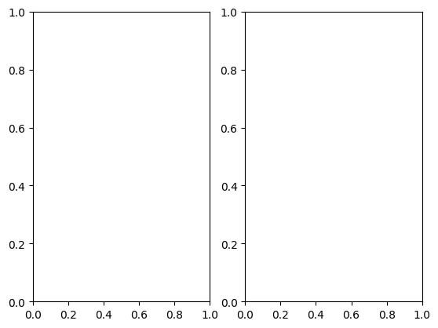
### add a plot to each axis
fig, ax = plt.subplots(1, 2, figsize = (10, 5))
ax[0].plot([1, 2, 3])
ax[0].set_title('Some Line')
ax[1].hist(np.random.random(100))
fig.suptitle('A Super Title');
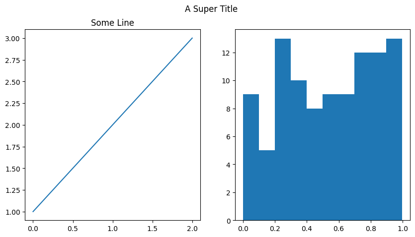
### create a 2 x 2 grid of plots
### add histogram to bottom right plot
fig, ax = plt.subplots(2, 2, figsize = (10, 8))
ax[1, 1].hist(np.random.random(100))
(array([11., 12., 5., 8., 19., 11., 10., 9., 6., 9.]),
array([0.00821536, 0.10686283, 0.2055103 , 0.30415776, 0.40280523,
0.5014527 , 0.60010017, 0.69874764, 0.7973951 , 0.89604257,
0.99469004]),
<BarContainer object of 10 artists>)
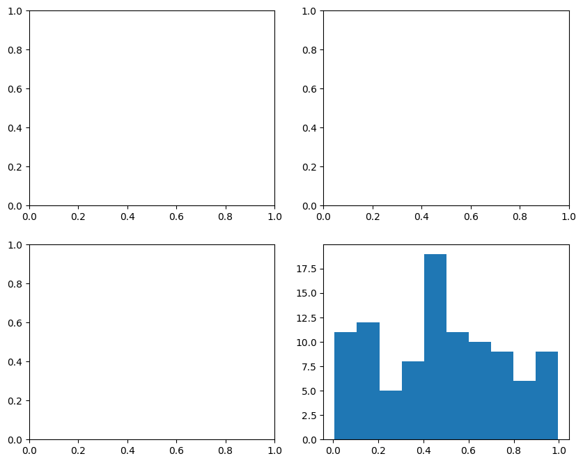
Exploratory Data Analysis#

Exploratory data analysis (EDA) is used by data scientists to analyze and investigate data sets and summarize their main characteristics, often employing data visualization methods. – IBM
Introduction to seaborn#
The seaborn library is built on top of matplotlib and offers high level visualization tools for plotting data. Typically a call to the seaborn library looks like:
sns.plottype(data = DataFrame, x = x, y = y, additional arguments...)
### load a sample dataset on tips
tips = sns.load_dataset('tips')
tips.head(2)
| total_bill | tip | sex | smoker | day | time | size | |
|---|---|---|---|---|---|---|---|
| 0 | 16.99 | 1.01 | Female | No | Sun | Dinner | 2 |
| 1 | 10.34 | 1.66 | Male | No | Sun | Dinner | 3 |
### boxplot of tips
sns.boxplot(data = tips, x = 'tip')
<Axes: xlabel='tip'>
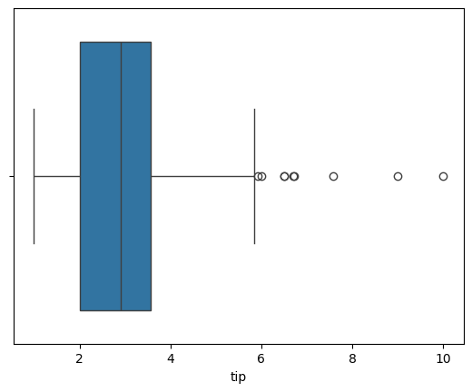
### boxplot of tips by day
sns.boxplot(data = tips, x = 'day', y = 'tip')
plt.title('Tips by Day');
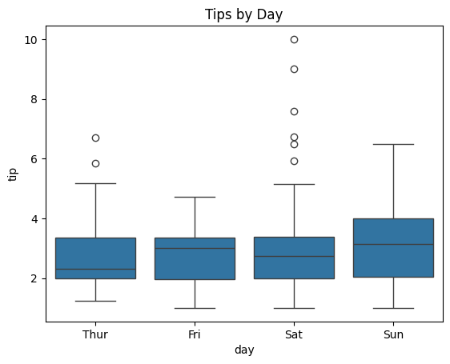
hue#
The hue argument works like a grouping helper with seaborn. Plots that have this argument will break the data into groups from the passed column and add an appropriate legend.
### boxplot of tips by day by smoker
sns.boxplot(data = tips, x = 'day', y = 'tip', hue = 'sex')
plt.title('Tips by Day and Sex');
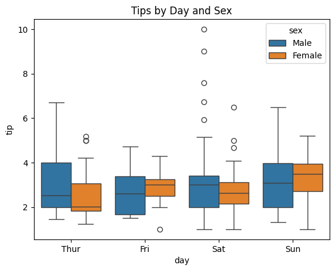
displot#
For visualizing one dimensional distributions of data.
### histogram of tips
sns.displot(data = tips, x = 'tip')
<seaborn.axisgrid.FacetGrid at 0x133b4e870>
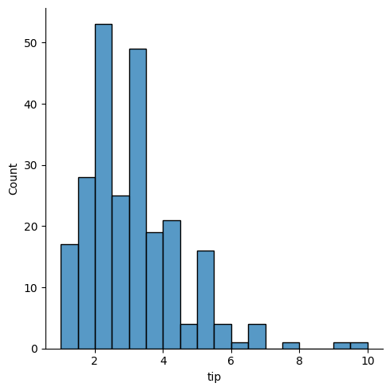
### kde plot
sns.displot(data = tips, x = 'tip', kind = 'kde')
<seaborn.axisgrid.FacetGrid at 0x132fbdd60>
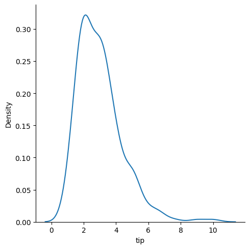
### empirical cumulative distribution plot of tips by smoker
sns.displot(data = tips, x = 'tip', kind = 'ecdf', hue = 'smoker')
<seaborn.axisgrid.FacetGrid at 0x133b874a0>
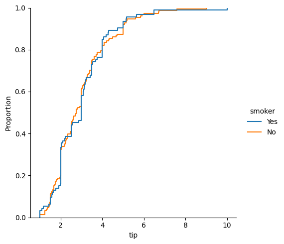
### using the col argument
sns.displot(data = tips, x = 'tip', col = 'smoker')
<seaborn.axisgrid.FacetGrid at 0x1331d4ef0>
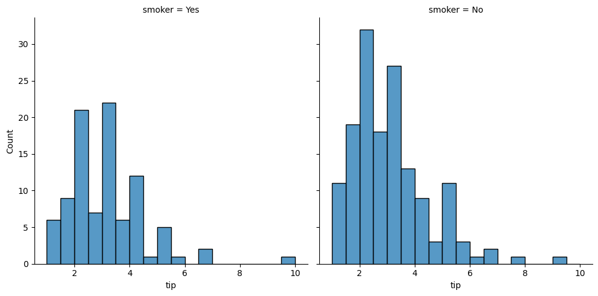
#draw a histogram and a boxplot using seaborn on two axes
fig, ax = plt.subplots(1, 2, figsize = (15, 5))
sns.histplot(data = tips, x = 'tip', ax = ax[0])
sns.boxplot(data = tips, x = 'day', y = 'tip', ax = ax[1])
ax[1].set_title('Boxplots')
fig.suptitle('This is a title for everything');
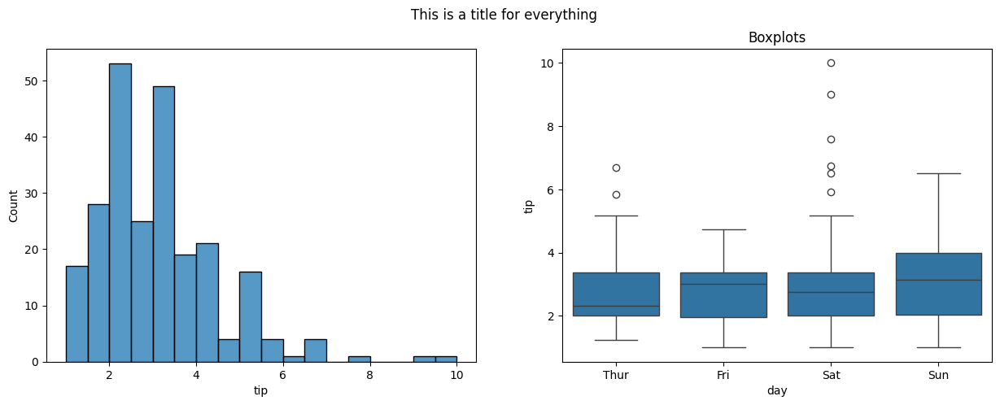
relplot#
For visualizing relationships.
### relplot of bill vs. tip
sns.relplot(data = tips, x = 'total_bill', y = 'tip')
<seaborn.axisgrid.FacetGrid at 0x133fe1c40>
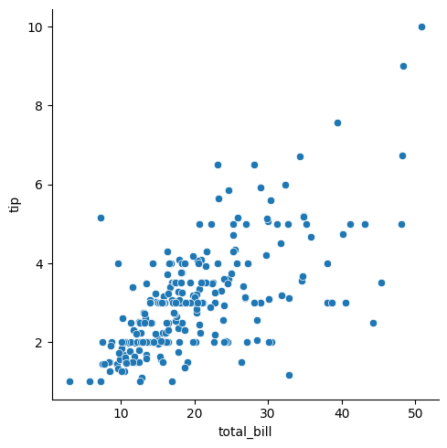
### regression plot
sns.regplot(data = tips, x ='total_bill', y = 'tip', lowess = True )
<Axes: xlabel='total_bill', ylabel='tip'>
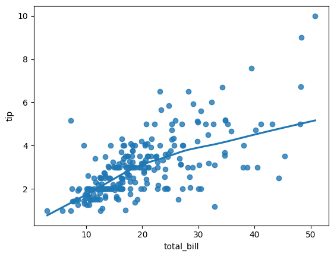
### swarm
sns.swarmplot(data = tips, x = 'smoker', y = 'tip')
<Axes: xlabel='smoker', ylabel='tip'>
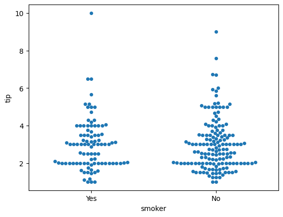
### violin plot
sns.violinplot(data = tips, x = 'smoker', y = 'tip')
sns.swarmplot(data = tips, x = 'smoker', y = 'tip')
<Axes: xlabel='smoker', ylabel='tip'>
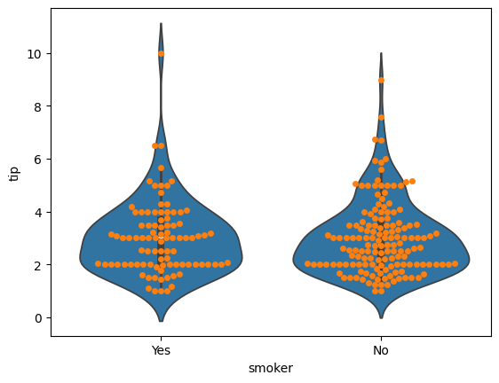
### countplot
sns.countplot(data = tips, x = 'smoker', hue = 'sex');
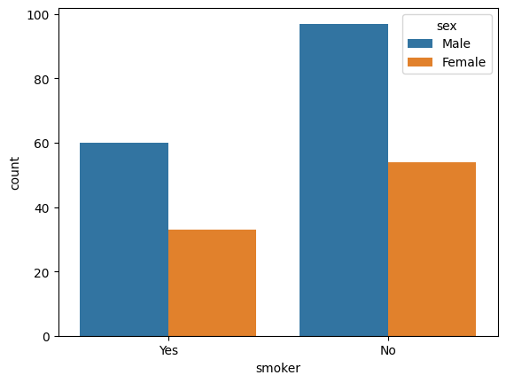
Additional Plots#
pairplotheatmap
penguins = sns.load_dataset('penguins').dropna()
### pairplot of penguins colored by species
sns.pairplot(data = penguins, hue = 'species', diag_kind = 'kde')
<seaborn.axisgrid.PairGrid at 0x133f0aa20>
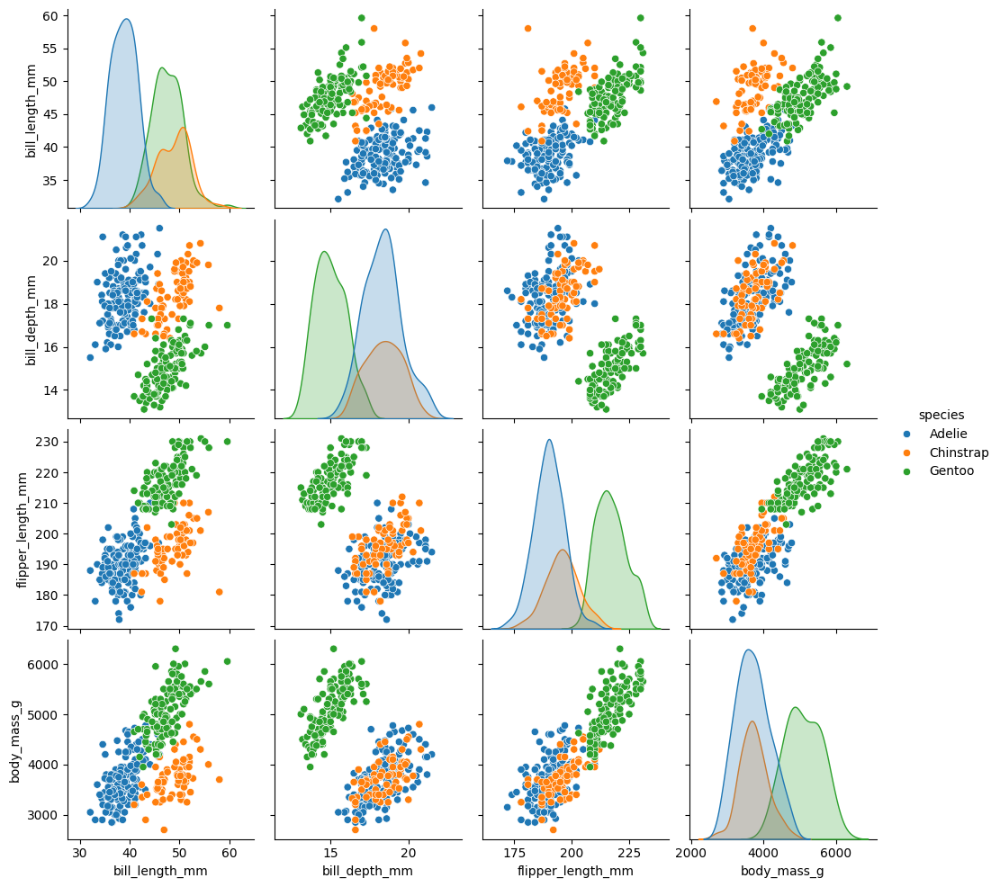
### housing data
from sklearn.datasets import fetch_california_housing
housing = fetch_california_housing(as_frame = True).frame
housing.head()
| MedInc | HouseAge | AveRooms | AveBedrms | Population | AveOccup | Latitude | Longitude | MedHouseVal | |
|---|---|---|---|---|---|---|---|---|---|
| 0 | 8.3252 | 41.0 | 6.984127 | 1.023810 | 322.0 | 2.555556 | 37.88 | -122.23 | 4.526 |
| 1 | 8.3014 | 21.0 | 6.238137 | 0.971880 | 2401.0 | 2.109842 | 37.86 | -122.22 | 3.585 |
| 2 | 7.2574 | 52.0 | 8.288136 | 1.073446 | 496.0 | 2.802260 | 37.85 | -122.24 | 3.521 |
| 3 | 5.6431 | 52.0 | 5.817352 | 1.073059 | 558.0 | 2.547945 | 37.85 | -122.25 | 3.413 |
| 4 | 3.8462 | 52.0 | 6.281853 | 1.081081 | 565.0 | 2.181467 | 37.85 | -122.25 | 3.422 |
Plotting Correlations#
Correlation captures the strength of a linear relationship between features. Often, this is easier to look at than a scatterplot of the data to establish relationships, however recall that this is only a detector for linear relationships!
### correlation in data
housing.corr(numeric_only = True)
| MedInc | HouseAge | AveRooms | AveBedrms | Population | AveOccup | Latitude | Longitude | MedHouseVal | |
|---|---|---|---|---|---|---|---|---|---|
| MedInc | 1.000000 | -0.119034 | 0.326895 | -0.062040 | 0.004834 | 0.018766 | -0.079809 | -0.015176 | 0.688075 |
| HouseAge | -0.119034 | 1.000000 | -0.153277 | -0.077747 | -0.296244 | 0.013191 | 0.011173 | -0.108197 | 0.105623 |
| AveRooms | 0.326895 | -0.153277 | 1.000000 | 0.847621 | -0.072213 | -0.004852 | 0.106389 | -0.027540 | 0.151948 |
| AveBedrms | -0.062040 | -0.077747 | 0.847621 | 1.000000 | -0.066197 | -0.006181 | 0.069721 | 0.013344 | -0.046701 |
| Population | 0.004834 | -0.296244 | -0.072213 | -0.066197 | 1.000000 | 0.069863 | -0.108785 | 0.099773 | -0.024650 |
| AveOccup | 0.018766 | 0.013191 | -0.004852 | -0.006181 | 0.069863 | 1.000000 | 0.002366 | 0.002476 | -0.023737 |
| Latitude | -0.079809 | 0.011173 | 0.106389 | 0.069721 | -0.108785 | 0.002366 | 1.000000 | -0.924664 | -0.144160 |
| Longitude | -0.015176 | -0.108197 | -0.027540 | 0.013344 | 0.099773 | 0.002476 | -0.924664 | 1.000000 | -0.045967 |
| MedHouseVal | 0.688075 | 0.105623 | 0.151948 | -0.046701 | -0.024650 | -0.023737 | -0.144160 | -0.045967 | 1.000000 |
### heatmap of correlations
plt.figure(figsize = (15, 5))
sns.heatmap(housing.corr(numeric_only=True), annot = True)
<Axes: >
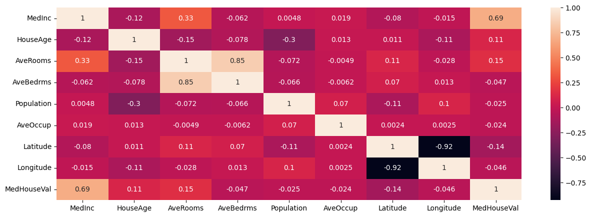
Problems#
Use the diabetes data below loaded from OpenML (docs).
from sklearn.datasets import fetch_openml
diabetes = fetch_openml(data_id = 37).frame
diabetes.head()
| preg | plas | pres | skin | insu | mass | pedi | age | class | |
|---|---|---|---|---|---|---|---|---|---|
| 0 | 6 | 148 | 72 | 35 | 0 | 33.6 | 0.627 | 50 | tested_positive |
| 1 | 1 | 85 | 66 | 29 | 0 | 26.6 | 0.351 | 31 | tested_negative |
| 2 | 8 | 183 | 64 | 0 | 0 | 23.3 | 0.672 | 32 | tested_positive |
| 3 | 1 | 89 | 66 | 23 | 94 | 28.1 | 0.167 | 21 | tested_negative |
| 4 | 0 | 137 | 40 | 35 | 168 | 43.1 | 2.288 | 33 | tested_positive |
Plot distribution of ages separated by class.
sns.displot(data = diabetes, x = 'age', hue = 'class')
<seaborn.axisgrid.FacetGrid at 0x133ac3860>
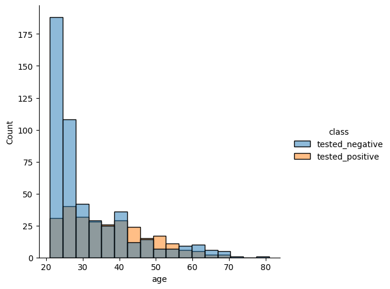
Use the plots below to determine which feature has the most distinct difference between classes?
fig, ax = plt.subplots(2, 4, figsize = (20, 10))
colnum = 0
for row in range(2):
for col in range(4):
sns.histplot(data = diabetes, x = diabetes.iloc[:,colnum], hue = 'class', ax = ax[row, col])
ax[row,col].set_title(diabetes.columns.tolist()[colnum])
colnum += 1
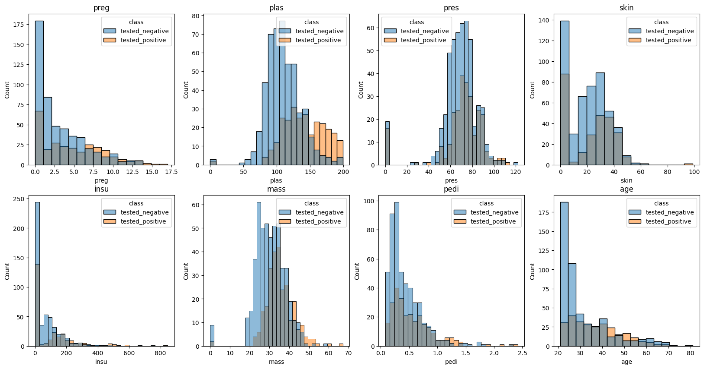
#Looks like plasticity shows the biggest difference between the group that
#tested positive and those that tested negative.
Head over the the seaborn documentation here. Find a different plot type or function and implement it using the diabetes data.
sns.relplot(data = diabetes, x = 'age', y = 'mass', kind = 'line', hue = 'class')
<seaborn.axisgrid.FacetGrid at 0x1380226c0>
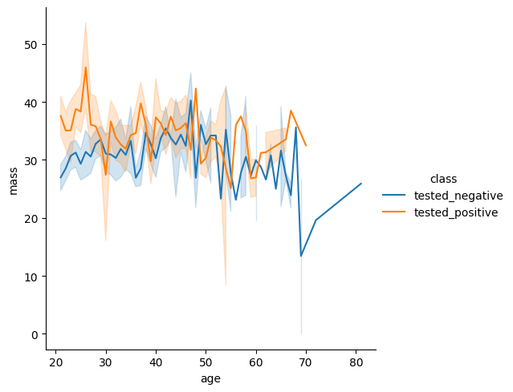
Partner Exercise#
What time of year is most popular for bike rentals?
What’s the most popular day of the week for bike rentals?
What’s the frequency of use for the average user?
What are the most and least congested bike stations?
bikeshare_hour = pd.read_csv('data/hour.csv')
bikeshare_hour.head()